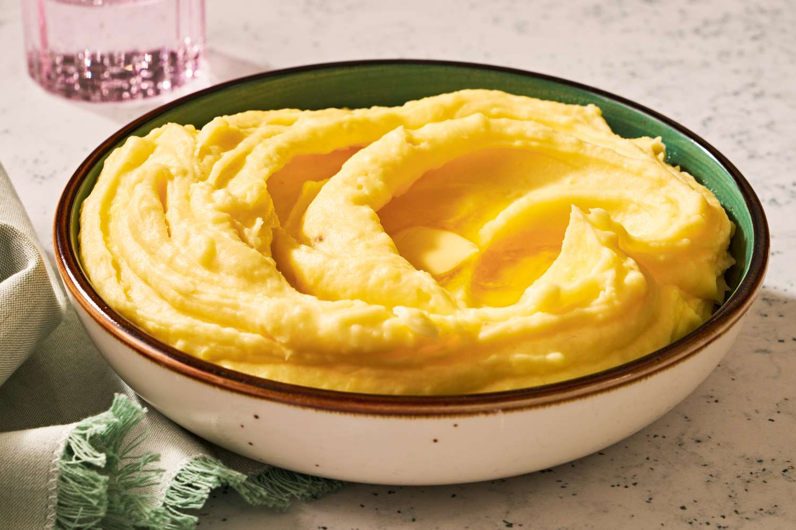

Mashed Potatoes

Description
Mashed potatoes make for a great side dish for any meal! Enjoy this simple yet
tasty recipe! Everyone will love it!
Ingredients
- 2 pounds baking potatoes, peeled and quartered
- 3 cloves garlic, peeled, or to taste (Optional)
- 1 cup milk
- 2 tablespoons butter
- salt and ground black pepper to taste
Steps
- Gather all ingredients.
- Bring a large pot of salted water to a boil. Add potatoes and garlic,
lower heat to medium, and simmer until potatoes are tender, about
15 minutes.
- When the potatoes are almost finished, heat milk and butter in a small
saucepan over low heat until butter is melted.
- Drain potatoes and return to the pot. Slowly add warm milk mixture,
blending it in with a potato masher or electric mixer until potatoes
are smooth and creamy.
- Season with salt and pepper. Serve topped with extra butter and enjoy!
Home